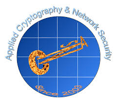

1st ACNS Workshop on Intelligent and Secure Computing
In conjunction with
ACNS 2026
| Stony Brook, New York, United States 22-25 June, 2026
Home
Call for Papers
Committee
Venue
Workshop Co-Chairs
Prof. Kuo-Hui Yeh, National Yang Ming Chiao Tung University, Taiwan
Prof. Chia-Mu Yu, National Yang Ming Chiao Tung University, Taiwan
Prof. Chunhua Su, University of Aizu, Japan
Web Chair
Lin-Fa Lee, National Yang Ming Chiao Tung University, Taiwan
Program Committee
Akihito Nakamura, The University of Aizu, Japan
Weizhi Meng, Lancaster University, UK
Jiageng Chen, Central China Normal University, China
Willy Susilo, University of Wollongong, Australia
Xiong Hu, University of Electronic Science and Technology of China, China
Alireza Jolfaei, Flinders University, Australia
Yingjiu Li, University of Oregon, USA
Xu Wang, University of Technology Sydney, Australia
Tooska Dargahi, Manchester Metropolitan University, UK
Goutham Reddy Alavalapati, University of Illinois Springfield, USA
Ankit Gupta, Exeter Finance LLC, USA
Chan Yeob Yeun, Khalifa University, UAE